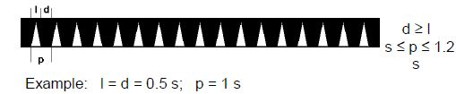

LICHTENLIJST
Lichten en mistseinen van België en aangrenzend gebied
Bijgewerkt tot
INHOUD
Hier komt de index
I. VOORWOORD
- De lichtenlijst geeft een opsomming en beschrijving van de lichten en mistseinen gelegen in:
- Het zeegebied begrensd door de meridianen 02°05’00”E en 03°35’00”E, de kust en de breedtegraad 51°41’00”N
- Het riviergebied van de Schelde, van Vlissingen tot aan de Rupel
- Het kanaal Gent-Terneuzen
-
Bronvermelding
- Gegevens van de Afdeling Kust - Vlaamse Hydrografie
- Gegevens van de Afdeling Maritieme Toegang
- Gegevens van de Dienst der Hydrografie (Nederland)
- Gegevens van de “Service Hydrographique et Océanographique de la Marine” (Frankrijk)
- Waar graden worden aangegeven gebeurt dit zonder vermelding van het graadteken bij lichtsectoren; alleenstaande cijferwaarden krijgen wel een graadindicatie.
-
Bijwerken van de lichtenlijst
- Op de correctielijst is aangegeven t.e.m. welke Berichten aan Zeevarenden (BaZ) de informatie bij gedownloade versie is bijgewerkt
- Correcties en/of aanvullingen worden gepubliceerd in de BaZ
- Op de correctielijst kan de gebruiker aangeven t.e.m. welke BaZ de download of afdruk zelf heeft bijgehouden.
Om een gedownloade versie op de juiste wijze bij te houden is het dus noodzakelijk dat men beschikt over de Berichten aan Zeevarenden.
U wordt uitgenodigd, alle opmerkingen die de scheepvaart aanbelangen in de gebieden van de Belgische kaarten omvatten (zie III.Kaartindex), zo spoedig mogelijk over te maken aan het:
Vlaams Ministerie van Mobiliteit en Openbare Werken
Agentschap voor Maritieme Dienstverlening en Kust
Afdeling Kust - Vlaamse Hydrografie
Administratief Centrum
Vrijhavenstraat 3
8400 Oostende
Tel. 059 55 42 11
email: nautinfo@mow.vlaanderen.be
Op ditzelfde adres kunnen tevens de eventuele onjuistheden of leemten worden gesignaleerd die vastgesteld worden in de publicaties van de Vlaamse Hydrografie.
II. CORRECTIELIJST
| Nr. en jaar BaZ | Datum van corrigeren" | Nr. en jaar BaZ | Datum van corrigeren |
|---|---|---|---|
III. KAARTINDEX
De exacte ligging van de verschillende (deel)kaarten wordt weergegeven op de kaartjes A en B op volgende pagina’s.
| Nationaal nummer | Internationaal nummer | Titel van de kaart" | schaal |
|---|---|---|---|
| D11 | Noordzee: Vlaamse Banken Van Gravelines tot Oostkapelle |
1/100 000 | |
| 101 | INT 1474 | Noordzee: Belgisch-Nederlandse kust Van Oostende tot Westkapelle |
1/60 000 |
| 102 | INT 1480 | Noordzee: Frans-Belgische kust Van Duinkerke tot Oostende |
1/60 000 |
| 104 | Westerschelde - Zeeschelde Monding Westerschelde tot monding-Rupel (omvat 10 kaartbladen) |
1/15 000 1/50 000 |
|
| 105 | Kanaal Gent naar Terneuzen (omvat 10 kaartbladen) |
1/10 000 | |
| 106 | INT 1478 | Westerschelde - Zeeschelde Baalhoek tot Wintam |
van 1/10 000 1/30 000 |
| 107 |
KAART A: Overzicht van de beschikbare papieren zeekaarten

KAART B: Overzicht van de beschikbare papieren zeekaartensets

IV. LIJST DER AFKORTINGEN
| B | Zwart | Black |
| Bk | Bank | Banc |
| BRB | Zwart-rood-zwart | Black red black |
| Bu | Blauw | Blue |
| BW | Zwart-wit | Black white |
| BWgb | Zwart-wit geblokt | Black white chequered |
| BWHS | Zwart-wit hor. gestreept | Black white hor. striped |
| BWVS | Zwart-wit vert. gestreept | Black white vert. striped |
| BY | Zwart-geel | Black yellow |
| BYB | Zwart-geel-zwart | Black yellow black |
| cd | Candela (Internationale kaars) | Candela |
| Dir | Gericht licht | Fixed light |
| E | Oost | East |
| ec | Verduistering | Eclipse |
| F | Vast | Fixed |
| (F) | Frankrijk | France |
| Fl | Schitter | Flashing |
| Fl(.) | Groepsschitter | Group-flashing |
| G | Groen | Green |
| Gb | Geblokt | Chequered |
| gl | Geleidelicht | Leading light |
| HL | Hoog licht | Rear light |
| hvh | Havenhoofd | Pier |
| hvl | Havenlicht | Harbour light |
| hvn | Haven | Harbour |
| Iso | Isofase | Isophase |
| kHz | Kilohertz | Kilohertz |
| LL | Laag licht | Front light |
| lt | Licht (fase) | light (phase) |
| m | Meter | Meter |
| M | Zeemijl | Nautical mile |
| min | Minuut | Minute |
| Mo | Morse | Morse code |
| mp | Meetpaal | Measuring pile |
| MSL | Middenstandsvlak | Mean sea level |
| N | Noord | North |
| (N) | Nederland | the Netherlands |
| Nauto | Nautofoon | Nautophone |
| Ob | Verduisterd | Obscured |
| Oc | Onderbroken | Occulting |
| Oc(.) | Groep onderbroken | Group-occulting |
| ong | Ongeveer | Approximate |
| Or | Oranje | Orange |
| Q | Flikker | Quick |
| R | Rood | Red |
| Ra.refl | Radarreflector | Radar reflector |
| RW | Rood-wit | Red white |
| Rwgb | Rood-wit geblokt | Red white chequered |
| RWHS | Rood-wit hor.gestreept | Red white hor.striped |
| RWVS | Rood-wit vert. gestreept | Red white vert. striped |
| S | Zuid | South |
| s | Seconde | Second |
| Vi | Violet | Violet |
| VQ | Snelle flikker | Very quick |
| W | West-wit | West-White |
| Y | Geel | Yellow |
| YB | Geel-zwart | Yellow black |
| YBY | Geel-zwart-geel | Yellow black yellow |
V. INLEIDING
1. Algemeen
De lichtenlijst geeft een opsomming en beschrijving van vaste en vlottende lichten en mistseinen, dienstig voor de scheepvaart.
2. Opbouw lichtenlijst
2.1 De lichten en mistseinen zijn gerangschikt volgens oplopende volgnummering, ingedeeld in zeegebieden (hoofdletters/vet) en onderverdeeld in vaarroutes (vet) Kustplaatsnamen staan vermeld in hoofdletters.
2.2 Het opzoeken van lichten wordt vergemakkelijkt door het gebruik van • een tabel met de corresponderende internationale en nationale lichtnummers; • een alfabetische index.
3. Definities
3.1 Lichten
| Algemene termen | |
| Karakter Character |
Kenmerkende combinaties van verschillende eigenschappen van een licht (verlicht, onverlicht, gekleurd of wit) die aan regelmatige- of ritmische verschijningsvormen kunnen worden herkend (b.v. een vast licht, schitterlicht, groepschitterlicht, kleurwisselend licht). |
| Vast licht Fixed light |
Een licht dat zonder onderbreking of verandering van karakter en/of kleur wordt getoond. |
| Ritmisch licht Rhythmic light |
Een licht waarvan het karakter in regelmatig terugkerende periodes wordt getoond (schitter, groepsschitter, kleurwisselend). |
| Kleurwisselend licht Alternating light |
Een ritmisch licht dat gedurende elke periode verschillende kleuren toont. |
| Periode Period |
De tijd waarin de gehele fase van het karakter wordt doorlopen. |
| Fase Phase |
Elk opeenvolgend element van een ritmisch licht (schittering, verduistering). |
| Peilingen Bearings |
Begrenzingen van lichtsectoren of zichtbaarheidsgrenzen van lichten. De grenzen van een sector worden aangegeven door ware richtingen, gezien vanaf de waarnemer op zee. |
| Beschrijvende termen | |
| Daglicht Daylight |
Licht dat 24u. per dag, zonder verandering van karakter, in werking is. De lichtsterkte kan overdag groter zijn. |
| Gericht licht Direction light |
Licht dat straalt in een zeer smalle sector en wordt gebruikt om een te volgen richting aan te geven. |
| Lichthoogte Elevation of a light |
Verticale afstand (m) gemeten vanaf de lichtbron tot het middenstandsvlak of een ander gedefinieerd vlak. |
| Mistlicht Fog light |
Licht dat alleen brandt tijdens verminderd zicht. |
| Hoogte lichtopstand Height of structure |
Verticale afstand (m) tussen voet en de top van de lichtopstand, inclusief op de top geplaatste seinen maar exclusief alle antennes en andere uitrustingen. |
| Geleidelichten Leading lights |
Twee of meer afzonderlijk geplaatste lichten die in combinatie met elkaar een geleidelijn vormen die moet worden gevolgd. |
| Lichten ineen Lights in line |
Lichten die in combinatie met elkaar een gevaar of begrenzing van een gebied aangeven. |
| Blink Loom |
Verstrooid licht dat als gevolg van atmosferische omstandigheden wordt waargenomen wanneer het licht zich onder de horizon of zich achter een obstakel bevindt. |
| Lichtsterkte Luminous intensity |
Intensiteit van een lichtbron die in een bepaalde richting met een vaste lichtbundel wordt uitgestraald (intensiteit in candela’s). |
| Hoofdlicht Main light |
Het belangrijkste licht in een groep van twee of meer lichten op dezelfde of op een nabijgelegen lichtopstand. |
| Sectorlicht Sector light |
Licht waarvan de verschijningsvorm over de verschillende sectoren over de horizon anders is (voornamelijk in kleur). |
| Hulplicht Subsidiary light |
Licht van ondergeschikt belang dat op of nabij een hoofdlicht is geplaatst en een speciale navigatiefunctie heeft: b.v. wanneer het dient als passeerlicht bij een lichtenlijn. |
3.2 Geluidsseinen
| Algemene termen | |
| Geluidssein Sound signal |
Geluid dat wordt uitgezonden om informatie over te brengen. |
| Mistsein Fog signal |
Geluidssignaal om schepen te waarschuwen of te begeleiden tijdens verminderd zicht. |
| Mistsein met morse Morse code fog signal |
Mistsein, uitgezonden in 1 of meer morsecodekarakter(s). |
| Waar bereik True range |
Maximale afstand, gemeten vanaf het punt van uitzenden, waarop, onder de heersende omstandig-heden, het uitgezonden signaal kan worden waargenomen. |
| Mistsignalen en geluidproducerende toestellen | |
| Bel Bell |
Een metalen belvormige klok die een karakteristiek geluid produceert door erop te slaan; |
| Diafoon Diaphone |
Instrument dat een karakteristiek geluid produceert doordat samengeperste lucht door een bewegend ventiel met luchtgaten wordt geperst. Zodoende kan er een tweetonig geluid ontstaan, waarvan de tweede toon een lagere frequentie heeft. Wanneer er slechts 1 toon wordt geproduceerd eindigt deze toon plotseling in een lagere toon, ook wel knorren of brommen genoemd. |
| Gong Gong |
Een platte schijf of klankkast die een duidelijk te herkennen resonant geluid voortbrengt. |
| Hoorn Horn |
Instrument bestaande uit een pijp waarvan de diameter varieert en dat een karakteristiek geluid voortbrengt. |
| Claxon Klaxon |
Klein soort nautofoon dat soms met de hand bediend wordt. |
| Membraanhoorn Membrane horn |
Het geluid wordt geproduceerd door met behulp van samengeperste lucht, stoom of elektriciteit een membraan in trilling te brengen. |
| Nautofoon Nautophone |
Het geluid wordt geproduceerd door met behulp van elektriciteit een membraan in trilling te brengen. |
| Fluit Reed |
Het schelle geluid wordt geproduceerd door met behulp van samengeperste lucht of door middel van stoom een riet in trilling te brengen. |
| Tyfoon Typhon |
Het geluid wordt geproduceerd door met behulp van stoom of samengeperste lucht een membraan in trilling te brengen. |
| Sirene Siren |
Zwaar klinkend mistwaarschuwingssignaal. Het geluid wordt geproduceerd door lucht door sleuven of gaten van een roterende schijf te persen. |
| Toeter Hooter |
Instrument dat een geluid produceert waarvan de geluidsfrequentie periodiek varieert rond een gemiddelde frequentie. |
| Fluit Whistle |
Instrument dat een schril geluid produceert d.m.v. het sturen van samengeperste lucht of stoom door een opening. |
4. Kolomindeling lichtenlijst
De lichten en mistsignalen zijn opgesomd en beschreven in een tabel met 8 kolommen.
| Kolom 1 | Het nationaal en internationaal nummer |
| Kolom 2 | Gebied, naam en plaats |
| Kolom 3 | Breedte en lengte |
| Kolom 4 | Karakter, kleur, periode van het licht en lichtsterkte |
| Kolom 5 | Hoogte in m |
| Kolom 6 | Nominale dracht in M |
| Kolom 7 | Beschrijving van de lichtopstand |
| Kolom 8 | Bijkomende informatie |
4.1. Volgnummer van het licht met daaronder het overeenstemmend internationaal nummer (cursief) d.w.z. het nummer waaronder het licht is opgenomen in de Britse “Admiralty of Lights”, met aanduiding van het betreffende boekdeel door de letters A of B.
4.2. Gebied, naam en plaats
Franse en Nederlandse lichten zijn resp. aangeduid door (F) en (N). Geografische plaatsnamen worden in HOOFDLETTERS gedrukt. De benaming van drijvende lichten wordt cursief vermeld.
Op land geplaatste lichten met een nominale dracht groter of gelijk aan 15 M, worden vet afgedrukt.
4.3. De geografische posities in WGS84 zijn uitgedrukt tot op een honderdste van een minuut.
4.4. Het karakter, het ritme, de kleur, de periode in seconden, eventueel een aanvullende term en de lichtsterkte. De periode is het tijdsverloop waarin eenmaal alle fasen van het karakter worden doorlopen. De eenheid voor lichtsterkte wordt uitgedrukt in candela en wordt, indien gekend, cursief vermeld. De kleur van het licht wordt aangeduid door W (wit), Y (geel of oranje), G (groen), R (rood) of Vi (violet). De aandacht wordt gevestigd op het feit dat bij grote afstanden en bepaalde atmosferische omstandigheden, de witte en soms zelfs de groene lichten de indruk kunnen geven als zijnde rood.
Voor mistseinen wordt de volgende informatie gegeven in internationaal geldende standaards: de aard van de geluidsbron met het aantal geluidssignalen dat wordt uitgezonden (ritme) en de periode.
De tabellen op de volgende bladzijden geven een beschrijving van de verschillende lichtkarakters met telkens het daarbij horende voorbeeld.
| Beschrijvende termen | Class of light | Int. afkorting | Voorbeeld |
| 1. Vast licht | Fixed | F | |
| 2. Onderbroken licht (langer licht dan donker) | |||
| 2.1. Onderbroken licht | (Single)-Occulting | Oc | |
| 2.2. Groeponderbroken licht | Group-occulting | Oc(#) | |
| 2.3. Samengesteld groeponderbroken licht | Composite group-occulting | Oc(#+#) | |
| 3. Isofase licht (periode licht is gelijk aan periode donker) | Isophase | Iso | |
| 4. Schitterlicht (langer donker dan licht en tempo < 50 sch./min) | |||
| 4.1. Schitterlicht | Single-flashing | Fl | |
| 4.2. Lang schitterlicht | Long-flashing | LFl | |
| 4.3. Groepschitterlicht | Group-flashing | Fl(#) | |
| 4.4. Samengesteld groepschitter licht | Composite group-flashing | Fl(#+#) | |
| 5. Flikkerlicht (snelheid van de schitteringen tussen 50 tot 80 per minuut) | |||
| 5.1. Flikkerlicht | Continuous quick | Q |  |
| 5.2. Groepflikkerlicht | Group quick | Q(#) | |
| 6. Snel flikkerlicht (snelheid van schitteringen tussen 80 en 160 per minuut) | |||
| 6.1. Snel flikkerlicht | Continuous very quick | VQ | |
| 6.2. Groep snel flikkerlicht | Group very quick | VQ(#) | |
| 7. Ultrasnel flikkerlicht(snelheid van schitteringen van tenminste 160 en gewoonlijk 240-300 per minuut) | |||
| 7.1. Ultrasnel flikkerlicht | Continuous ultra quick | UQ | |
| 8. Bijzondere lichten | |||
| 8.1. Morse-code licht | Morse code | Mo(#) | |
| 8.2. Vast- en schitterlicht | Fixed and flashing | FFl | |
| 8.3. Alternerend, kleurwisselend licht | Alternating | Al## | |
| 8.4. Onderbroken, alternerend licht | Occulting alternating | OAL | |
5. De hoogte van de lichtbron of van het midden van de lichtbron (neonbuizen), in meter boven zeeniveau. Het referentievlak voor de vaste lichten is de middenstand van de zeespiegel (MSL).
6.. De nominale dracht in zeemijl (M), in vet gedrukte cijfers als groter of gelijk aan 15 M, anders in gewone cijfers. Wanneer een licht verschillende kleursectoren heeft, wordt na elke kleur van de sector de dracht vermeld. Om bij een gegeven afstand een licht te kunnen waarnemen, moet het:
- zich t.o.v. de waarnemer boven de schijnbare horizon bevinden;
- een voldoende lichtsterkte hebben;
- niet worden verduisterd door meteorologische omstandigheden tussen waarnemer en lichtbron.
De geografische dracht hangt af van de hoogte van het licht, de ooghoogte van de waarnemer en van de atmosferische straalbreking. De tabel “Geografische dracht” verderop in deze inleiding geeft de geografische dracht in zeemijlen in functie van de ooghoogte van de waarnemer en de hoogte van de lichtbron in meter. In sommige gevallen dient de hoogte van het licht te worden gecorrigeerd voor het getij.
De optische dracht van het licht hangt voornamelijk af van zijn lichtsterkte en de helderheid van de lucht en in mindere mate van het karakter, de duur van de schitteringen en de intervallen ertussen.
De lichtsterkte (candela’s) mag, indien bekend, cursief vermeld worden in kolom 4. Weerstations zenden gegevens over het horizontale zicht boven het wateroppervlak in kilometer uit voor een bepaalde periode en gebied, op een schaal van 0 tot 9 (code VV - zie blz. XXII). Het diagram “Optische dracht” verderop in deze inleiding laat toe de optische dracht te bepalen volgens haar lichtsterkte (candela’s) en horizontale zichtbaarheid (zeemijlen).
B.v. bij een nominale dracht van 10 M (of een lichtsterkte van 1300 candela’s) en een zichtbaarheid van 7 (tussen 10 en 20 km), zal de optische dracht liggen tussen 6,5 en 10 M.
De nominale dracht is de optische dracht in een homogene atmosfeer bij een meteorologische zichtbaarheid van 10 M.
7. De beschrijving en hoogte van de opstand. Hiermee wordt bedoeld, de verticale hoogte in m, gemeten vanaf de voet tot aan de top van de constructie, niet inbegrepen antennes e.d. Als beschrijving geldt de vorm, het gebruikte materiaal en de kleur(en). Voor de vlottende bebakening wordt het topteken, de kleur, de aanwezigheid van een radarreflector en het opschrift vermeld.
8. Aanvullende informatie over o.a. lichtsectoren, zichtbaarheid van sectoren, lichtenlijnen, verkeersen mistseinen. De sectorgrenzen, evenals peilingen en lichtenlijnen, zijn ware richtingen van 0° (noord) tot 360° gerekend vanaf de waarnemer volgens wijzerzin. Peilingen worden gegeven vanuit zee, in graden of, indien nodig, in tienden graad.
5. Informatie met betrekking tot lichten
5.1 Algemeen
- Wolken verduisteren vaker lichten met een grote hoogte boven zeeniveau dan lichten met een kleine hoogte.
- Drijvende lichten kunnen zonder bericht opgenomen worden voor herstelling en niet teruggeplaatst.
- Positie en toestand van een lichtboei dienen met de nodige omzichtigheid behandeld te worden. Lichten van luchtvaartbakens hebben vaak een grote lichtsterkte en hoogte boven het zeeniveau en worden daardoor op veel
grotere afstanden waargenomen dan kustverlichting ten behoeve van de scheepvaart.
Waarschuwing: Luchtvaartbakens worden door andere instanties onderhouden dan de kustverlichting. Daardoor is het mogelijk dat kleur en/of karakter van deze lichten gewijzigd worden voordat de scheepvaart via de Berichten aan Zeevarenden daarvan op de hoogte gesteld wordt.
5.2 Zichtbaarheid-dracht
- De afstand tussen een licht en een waarnemer kan niet geschat worden wanneer de schijnbare helderheid wordt gebruikt.
- Mist, nevel, stof, rook en regen zijn factoren die de dracht van een licht aanzienlijk kunnen reduceren.
- Een helder verlicht gebied achter een licht kan, in negatieve zin, van grote invloed zijn op de zichtbaarheid van dat licht.
- De zichtbaarheid van een licht kan gereduceerd worden door afzetting van ijs, rijp of condens op de lens van het licht. Bovendien kunnen daardoor sommige kleuren als wit worden aangezien.
5.3 Kleuren
Er moet met zorg worden omgegaan met kleurverschillen. Straalbreking van het licht in de atmosfeer en ooginspanningen van de waarnemer kunnen er toe bijdragen dat kleuren moeilijker te onderscheiden zijn. ‘s Nachts
is op afstand een wit licht moeilijk te onderscheiden van een geel of een blauw licht. Onder bepaalde atmosferische omstandigheden kan een wit licht worden aangezien als roodachtig van kleur. Overdag worden kleuren onduidelijk
wanneer tegen de zon moet worden ingekeken, en een helder rood licht kan als een oranje licht worden aangezien. In het bijzonder kan dit gelden voor kleurwisselende lichten.
5.4 Karakters
- Van faselichten met variërende optische intensiteiten (lichtsterkten), kunnen, afhankelijk van de afstand van waaruit zij worden waargenomen, de schijnbare karakters verschillen, omdat bepaalde fasen niet kunnen worden onderscheiden.
- Lichten met erg korte schitteringen hoeven niet op de verwachte afstanden zichtbaar te zijn.
- De tijdsduur van een korte schittering kan kleiner lijken wanneer het wordt waargenomen vanaf een afstand die dicht bij de maximum dracht ligt en onder slechte atmosferische omstandigheden.
- De schijnbare karakters van drijvende lichten moeten met omzichtigheid worden behandeld daar ze volledig kunnen verschillen van de eigenlijke karakters. Dit is te wijten aan de voortdurende wijzigingen in hoogte en oriëntatie van het licht.
5.5 Sectoren
In veel gevallen moet men omzichtig te werk gaan met de begrenzingen van sectoren. Over het algemeen zijn zij matig gedefinieerd, met verlichte en onverlichte sectoren die geleidelijk in elkaar overlopen. Kleurveranderingen
tussen de sectoren lopen ook geleidelijk in elkaar over, niet zelden over enkele graden.
VI. VERKEERSSEINEN
Volgende internationale seinen worden gehesen:
- In Oostende, op de hoge seinmast (aan de basis van het vroegere oosterstaketsel);
- In Zeebrugge, op panelen geplaatst op de koppen van de westelijke en oostelijke strekdam en aan de seinmast (kop oude havendam).
N.B.: in Oostende wordt bovendien, zowel overdag als ‘s nachts een geel flikkerlicht ontstoken:
(1) op het gebouw van DAB Vloot, wanneer de haveningang - buiten de koppen van de hoofden - en de havengeul tot aan de Demeysluis door alle vaartuigen vrijgehouden moet worden;
(2) aan de ingang van het Montgomerydok en ter regeling van het verkeer naar de havengeul werd een geel flikkerlicht geplaatst met daaronder twee verkeersborden, landwaarts gericht, het bovenste met rode, het onderste met groene pijlen;
(3) aan de ingang van de visserssluis (Maritiem Plein), zijn onder een geel flikkerlicht twee verkeersborden geplaatst, landwaarts gericht en voorzien van rode, resp. groene pijlen.
VII. TABEL 'GEOGRAFISCHE DRACHT'
| Hoogte voorwerp boven water | Hoogte oog boven water in m | ||||||||||||||
| in m | 0 | 1.5 | 3 | 5 | 6 | 8 | 10 | 12 | 14 | 16 | 18 | 20 | 23 | 26 | 29 |
| 0 | 0 | 2.5 | 3.5 | 4.5 | 5.0 | 5.7 | 6.4 | 7.0 | 7.6 | 8.1 | 8.6 | 9.0 | 9.7 | 10.3 | 10.9 |
| 10 | 6.4 | 8.9 | 9.9 | 10.9 | 11.3 | 12.1 | 12.8 | 13.4 | 14.0 | 14.5 | 15.0 | 15.4 | 16.1 | 16.7 | 17.3 |
| 12 | 7.0 | 9.5 | 10.5 | 11.6 | 12.0 | 12.7 | 13.4 | 14.0 | 14.6 | 15.1 | 15.6 | 16.0 | 16.7 | 17.3 | 17.9 |
| 14 | 7.6 | 10.0 | 11.1 | 12.2 | 12.5 | 13.3 | 14.0 | 14.6 | 15.1 | 15.6 | 16.1 | 16.6 | 17.3 | 17.9 | 18.4 |
| 16 | 8.1 | 10.6 | 11.6 | 12.7 | 13.0 | 13.8 | 14.5 | 15.1 | 15.6 | 16.2 | 16.7 | 17.1 | 17.8 | 18.4 | 19.0 |
| 18 | 8.6 | 11.0 | 12.1 | 13.2 | 13.5 | 14.3 | 15.0 | 15.6 | 16.1 | 16.7 | 17.1 | 17.6 | 18.3 | 18.9 | 19.5 |
| 20 | 9.0 | 11.5 | 12.5 | 13.7 | 14.0 | 14.8 | 15.4 | 16.0 | 16.6 | 17.1 | 17.6 | 18.1 | 18.7 | 19.3 | 19.9 |
| 23 | 9.7 | 12.2 | 13.2 | 14.4 | 14.6 | 15.4 | 16.1 | 16.7 | 17.3 | 17.8 | 18.3 | 18.7 | 19.4 | 20.0 | 20.6 |
| 26 | 10.3 | 12.8 | 13.8 | 14.9 | 15.3 | 16.0 | 16.7 | 17.3 | 17.9 | 18.4 | 18.9 | 19.3 | 20.0 | 20.6 | 21.2 |
| 29 | 10.9 | 13.4 | 14.4 | 15.5 | 15.8 | 16.6 | 17.3 | 17.9 | 18.4 | 19.0 | 19.5 | 19.9 | 20.6 | 21.2 | 21.8 |
| 32 | 11.4 | 13.9 | 14.9 | 16.0 | 16.4 | 17.1 | 17.8 | 18.4 | 19.0 | 19.5 | 20.0 | 20.5 | 21.1 | 21.7 | 22.3 |
| 36 | 12.1 | 14.6 | 15.6 | 16.7 | 17.1 | 17.8 | 18.5 | 19.1 | 19.7 | 20.2 | 20.7 | 21.2 | 21.8 | 22.4 | 23.0 |
| 40 | 12.8 | 15.3 | 16.3 | 17.4 | 17.7 | 18.5 | 19.2 | 19.8 | 20.3 | 20.9 | 21.4 | 21.8 | 22.5 | 23.1 | 23.7 |
| 45 | 13.6 | 16.0 | 17.1 | 18.1 | 18.5 | 19.3 | 19.9 | 20.6 | 21.1 | 21.6 | 22.1 | 22.6 | 23.2 | 23.9 | 24.4 |
| 50 | 14.3 | 16.8 | 17.8 | 18.9 | 19.2 | 20.0 | 20.7 | 21.3 | 21.9 | 22.4 | 22.9 | 23.3 | 24.0 | 24.6 | 25.2 |
| 55 | 15.0 | 17.5 | 18.5 | 19.6 | 19.9 | 20.7 | 21.4 | 22.0 | 22.5 | 23.1 | 23.6 | 24.0 | 24.7 | 25.3 | 25.9 |
| 60 | 15.7 | 18.1 | 19.2 | 20.2 | 20.6 | 21.4 | 22.0 | 22.7 | 23.2 | 23.7 | 24.2 | 24.7 | 25.3 | 26.0 | 26.5 |
| 70 | 16.9 | 19.4 | 20.4 | 21.5 | 21.9 | 22.6 | 23.3 | 23.9 | 24.5 | 25.0 | 25.5 | 25.9 | 26.6 | 27.2 | 27.8 |
| 80 | 18.1 | 20.6 | 21.6 | 22.7 | 23.0 | 23.8 | 24.5 | 25.1 | 25.6 | 26.2 | 26.6 | 27.1 | 27.8 | 28.4 | 29.0 |
| 90 | 19.2 | 21.6 | 22.7 | 23.7 | 24.1 | 24.9 | 25.6 | 26.2 | 26.7 | 27.3 | 27.7 | 28.2 | 28.9 | 29.5 | 30.1 |
| 100 | 20.2 | 22.7 | 23.7 | 24.7 | 25.2 | 25.9 | 26.6 | 27.2 | 27.8 | 28.3 | 28.8 | 29.2 | 29.9 | 30.5 | 31.1 |
| 125 | 22.6 | 25.1 | 26.1 | 27.2 | 27.5 | 28.3 | 29.0 | 29.6 | 30.2 | 30.7 | 31.2 | 31.6 | 32.3 | 32.9 | 33.5 |
| 150 | 24.8 | 27.2 | 28.3 | 29.3 | 29.7 | 30.5 | 31.1 | 31.8 | 32.3 | 32.8 | 33.3 | 33.8 | 34.4 | 35.1 | 35.6 |
| 175 | 26.7 | 29.2 | 30.2 | 31.2 | 31.7 | 32.4 | 33.1 | 33.7 | 34.3 | 34.8 | 35.3 | 35.8 | 36.4 | 37.0 | 37.6 |
| 200 | 28.6 | 31.1 | 32.1 | 33.1 | 33.5 | 34.3 | 35.0 | 35.6 | 36.1 | 36.7 | 37.2 | 37.6 | 38.3 | 38.9 | 39.5 |
| 250 | 32.0 | 34.4 | 35.5 | 36.5 | 36.9 | 37.7 | 38.3 | 39.0 | 39.5 | 40.0 | 40.5 | 41.0 | 41.6 | 42.3 | 42.8 |
| 300 | 35.0 | 37.5 | 38.5 | 39.6 | 40.0 | 40.7 | 41.4 | 42.0 | 42.6 | 43.1 | 43.6 | 44.0 | 44.7 | 45.3 | 45.9 |
De opgegeven waarden verdienen geen onbeperkt vertrouwen. De werkelijke waarden kunnen, wegens het erg veranderlijk gedrag van de aardse straalbuiging, in hoge mate van de gegeven waarden afwijken.
VIII. DIAGRAM
® : VVcode voor het meteorologisch zicht
--- : Optische dracht=geografische dracht
IX. TOELICHTING DIAGRAM
De optische dracht is de afstand waarop een licht nog juist zichtbaar is, rekening houdende met zijn lichtsterkte (in candela’s) of zijn nominale dracht (in zeemijlen) en met de (veranderlijke) doorlatingsgraad van de atmosfeer.
| VV code | Meteorologische zichtbaarheid | |
| 0 | minder dan 50 m | zeer dikke mist |
| 1 | van 50 tot 200 m | dikke mist |
| 2 | van 200 tot 500 m | mist |
| 3 | van 0.5 tot 1 km | mistig |
| 4 | van 1 tot 2 km | nevelig |
| 5 | van 2 tot 4 km | slecht zicht |
| 6 | van 4 tot 10 km | matig zicht |
| 7 | van 10 tot 20 km | vrij goed zicht |
| 8 | van 20 tot 50 km | helder |
| 9 | meer dan 50 km | zeer helder |
Op de grafiek zijn, met logaritmische schalen, uitgezet:
- horizontaal : volgens twee verschillende schalen, de nominale dracht in zeemijlen (cfr. kolom 6) en eronder de lichtsterkte in candela’s (cfr. kolom 4). De lichtsterkten in candela’s zijn uitgedrukt in machten van 10. De tussenwaarden 2 en 5 zijn vermenigvuldigingsfactoren. Tussenliggende waarden moeten op het oog worden geïnterpoleerd.
- verticaal : de optische drachten in zeemijlen.
De waarden, in zeemijlen en kilometers, langs de krommen in de grafiek duiden het geschatte meteorologische zicht aan op het tijdstip van de waarneming. Vertrekkend van de horizontale as (lichtsterkte of nominale dracht) zoekt men evenwijdig met de ordinaat het snijpunt met de kromme meteorologisch zicht. Van hieruit vervolgt men horizontaal en men leest de optische dracht af op de verticale as.
Voorbeeld
Gekend: de lichtsterkte = 149 cd of de nominale dracht = 6 M Gevraagd: de optische dracht bij een meteorologische zicht van 5,4 M. Het snijpunt van de abscis 149 candela’s (of 6 M nom. dracht) met de 5,4
M kromme levert als ordinaat de gezochte afstand (4,4 M) waarop bij het heersende zicht van 5.4 M, het licht juist zichtbaar zal worden.
Zo kan, omgekeerd, uit het diagram de meteorologische zichtbaarheid worden afgeleid, wanneer de sterkte van het licht en zijn afstand tot de waarnemer (uit het bestek) gekend zijn, op het ogenblik dat het juiste licht
in zicht komt.
Ten slotte dient te worden opgemerkt dat het gebruik van de grafiek volgende beperkingen inhoudt:
- De verkregen zichtbaarheden zijn benaderend;
- De doorlating van de atmosfeer tussen waarnemer en licht verloopt niet uniform, dit vnl. door wijzigende achtergrondverlichting.